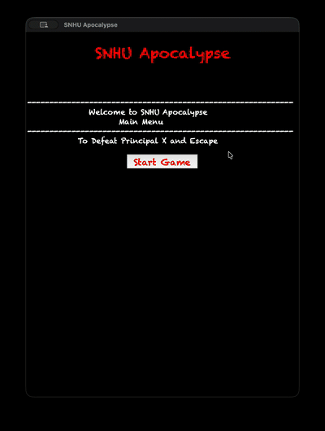
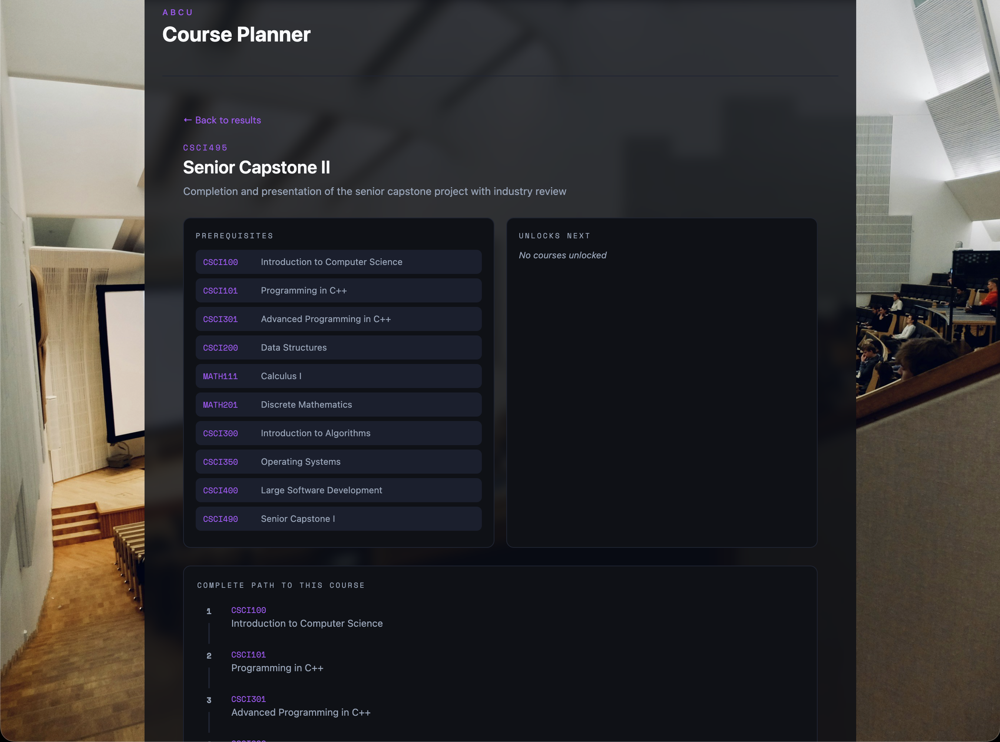
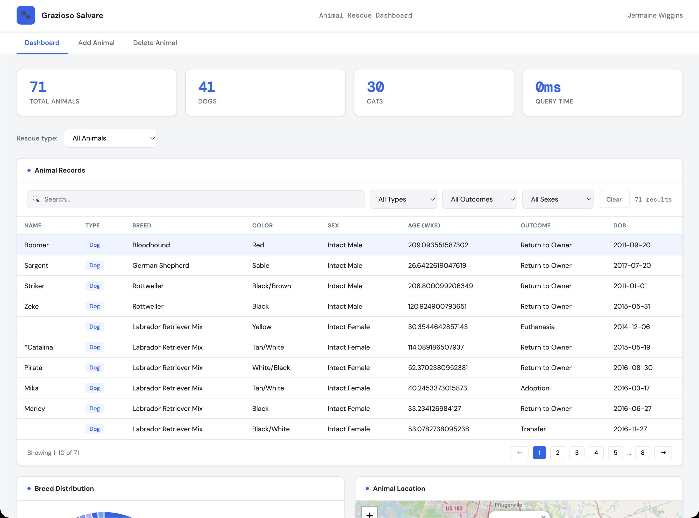

CS499 Computer Science Capstone — SNHU
Aspiring Data Analyst & Software Engineer
CS graduate with a background in sales, building software that is structured, efficient, secure, and accessible to the people who use it.
Professional Self-Assessment
Computer Science graduate from SNHU with a background in sales, transitioning into a Data Analyst or Software Engineer role. My experience communicating across teams and adapting to different audiences shaped how I approach software — data should be accessible, usable, and built with the end user in mind.
Collaboration & Communication
Within the program, I developed collaboration skills through team-based environments where I contributed changes through structured version control workflows, participated in peer code review, and coordinated work across a shared codebase.
Within the program, I developed collaboration skills through team-based environments where I contributed changes through structured version control workflows, participated in peer code review, and coordinated work across a shared codebase. Reviewing the work of others and having my own work reviewed taught me to write with clarity and consistency in mind.
I carried that practice into personal projects outside of coursework, organizing repositories and documentation for an audience that was not part of the original build. Through both academic writing and my sales background, I learned to explain information to technical and non-technical audiences by adjusting detail and language to fit the situation.
Technical Skills
My understanding of data structures and algorithms developed through solving problems that required evaluating tradeoffs between time and space complexity and selecting structures that fit the access patterns of a given problem.
My understanding of data structures and algorithms developed through solving problems that required evaluating tradeoffs between time and space complexity and selecting structures that fit the access patterns of a given problem.
Software engineering and database concepts were strengthened through building systems that manage structured data, writing automated tests to verify correctness, and designing backend interfaces that a frontend could consume reliably. Security was integrated into my approach from the start — I learned to anticipate misuse, validate inputs, and design with risk awareness rather than as an afterthought.
About This Portfolio
The three artifacts in this portfolio each target a distinct area of computer science: software design and engineering, algorithms and data structures, and client-server development with a database backend.
The three artifacts in this portfolio each target a distinct area of computer science: software design and engineering, algorithms and data structures, and client-server development with a database backend.
Collectively, they demonstrate the full range of skills developed throughout the program and show my ability to improve existing software across multiple dimensions, producing work that is structured, efficient, secure, and built with the end user in mind.
Enhanced Artifacts
Each artifact was selected from prior coursework and enhanced to demonstrate mastery across the five CS program outcomes.

Software Design and Engineering
A text-based adventure game originally built in Python, refactored into OOP classes and enhanced with a Tkinter GUI, custom AI-generated room images, and defensive programming.

Algorithms and Data Structures
A C++ course planning tool rebuilt in Angular with optimized data structures, recursive graph traversal, topological sorting, and a modern web interface.

Databases
A Python and MongoDB dashboard for Grazioso Salvare migrated from a Jupyter notebook to a Flask REST API with a JavaScript frontend, indexed queries, and layered security.